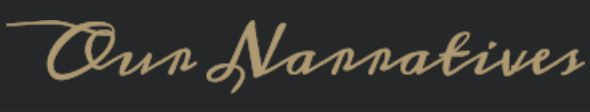
Article originally published in Our Narratives
By Adelina 艾德琳, Published July 25, 2024
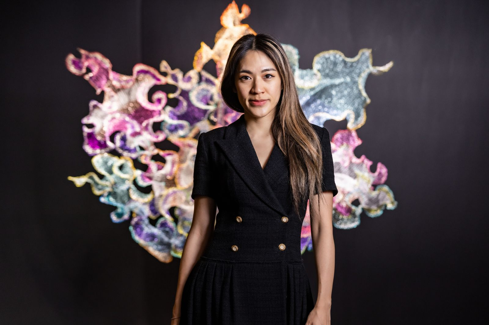
Self portrait
Born in Taipei in 1986, Julia Hung has a multicultural background that has imbued her identity and art with dynamic and ever-changing qualities. Her creations, like water, effortlessly transcend boundaries and forms while retaining their intrinsic essence. This fluidity reflects her diverse perspective and embraces the profound Taoist philosophy of interdependence and interchangeability.
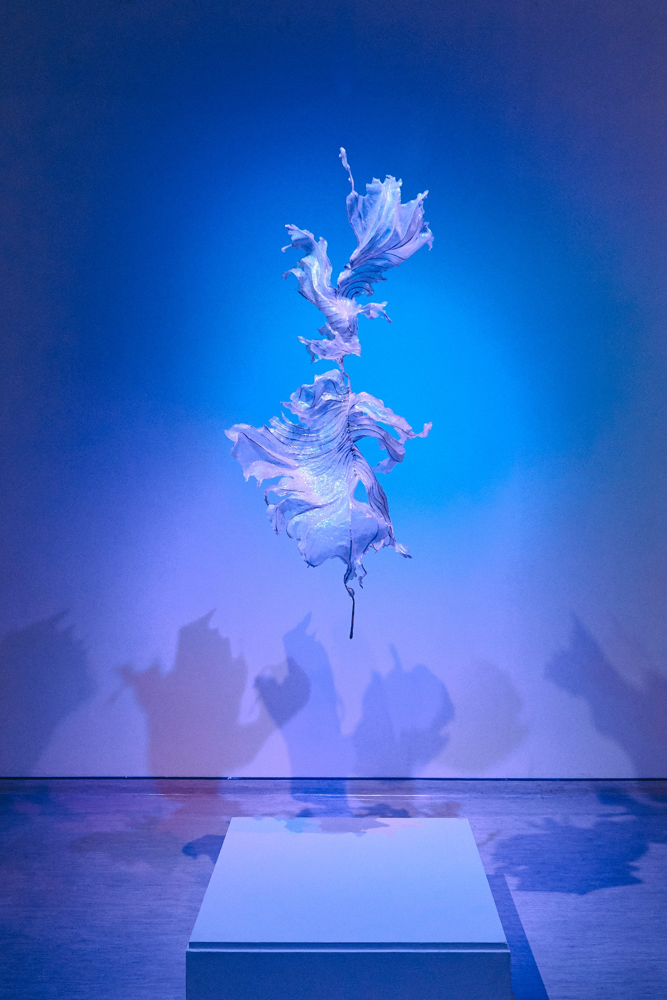
Biomimicry, 2018, mixed media (used plastic bag, resin, wire), H170 x W80 x D70 cm
An ocean lover, Julia Hung has lived in different countries, giving her a strong sense of belonging to the ocean. From Canada and Switzerland to her return to Taiwan, she created her first piece using recycled plastic bags, named “仿生 Biomimicry.” Inspired by nature, it mimics the forms and characteristics of fish tails, fallen leaves, and seaweed, questioning consumerist values and advocating for the harmonious ecosystem of nature to redefine value.
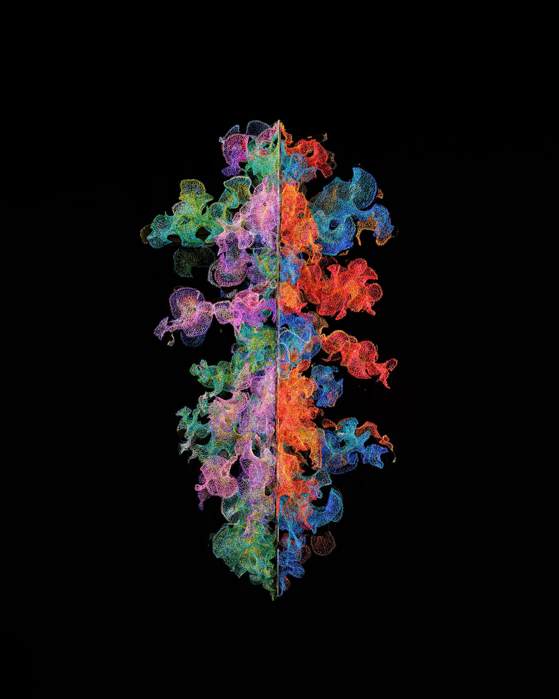
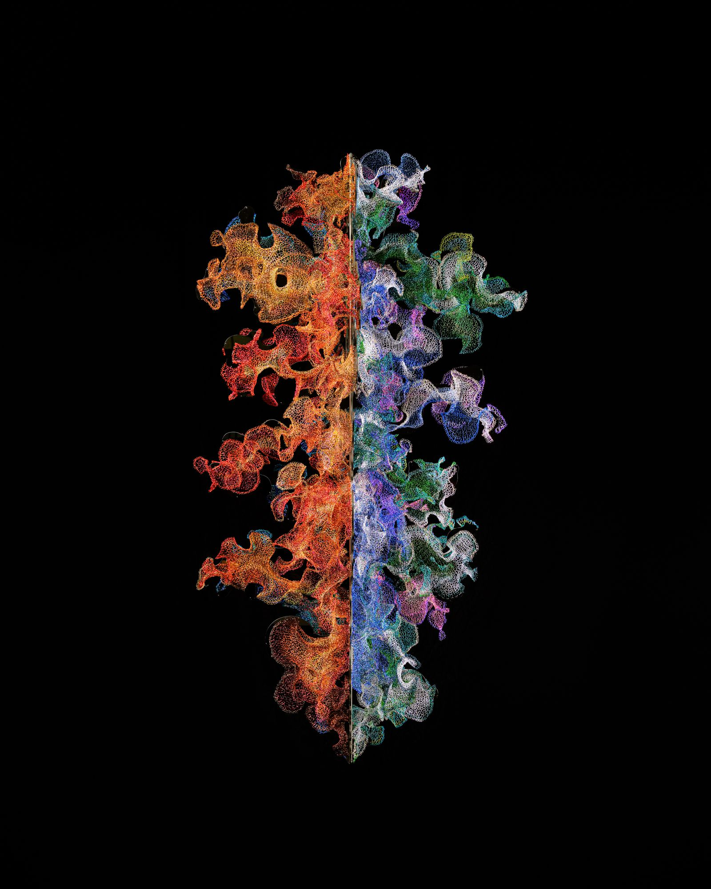
Infinite, 2022, Enamelled copper wire, stainless steel plate and screw, H178 x W90 x D90 cm
Julia Hung holds a Bachelor of Design degree from OCAD University and a Master of Fine Arts degree from HEAD – Genève. She seamlessly blends traditional techniques with various mediums to explore alternative modes of thinking and creating art. For example, her exhibition “An Unusual Knot” combines traditional weaving techniques with her artistic freedom and extended thinking, making the piece more approachable and opening up more possibilities for exploration. She also excels at using fine copper wires of different colors to weave sculptures that resemble flowing water, reflecting her philosophical musings on the multifaceted nature of life through the fluidity of the forms.
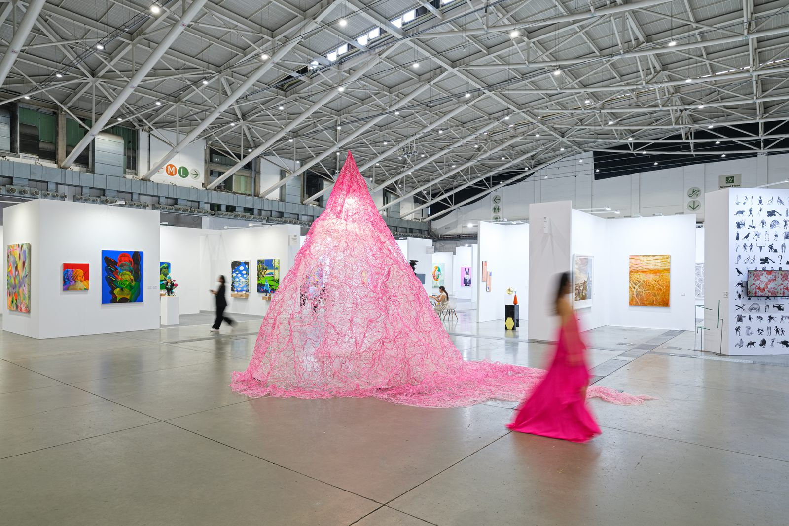
Indefinite Pink, 2024, mixed media (thread, resin, metal structure, light bulb), H4 x W4 x D6 m
Her new work “Indefinite Pink” intentionally creates the shape into a hollow form resembling a pointed hat or tent, creating a meditative space for the viewer. By selecting pink yarn as the material and creating a woven appearance without the traditional weaving process typically associated with female labour, she explores how color associations with different genders are deliberately shaped and solidified. The fluid linear language in the work corresponds to an open interpretation and imagination, symbolizing the possibility of loosening society’s entrenched frameworks of thought. The microcosm she creates boldly transcends societal norms and cultural barriers.
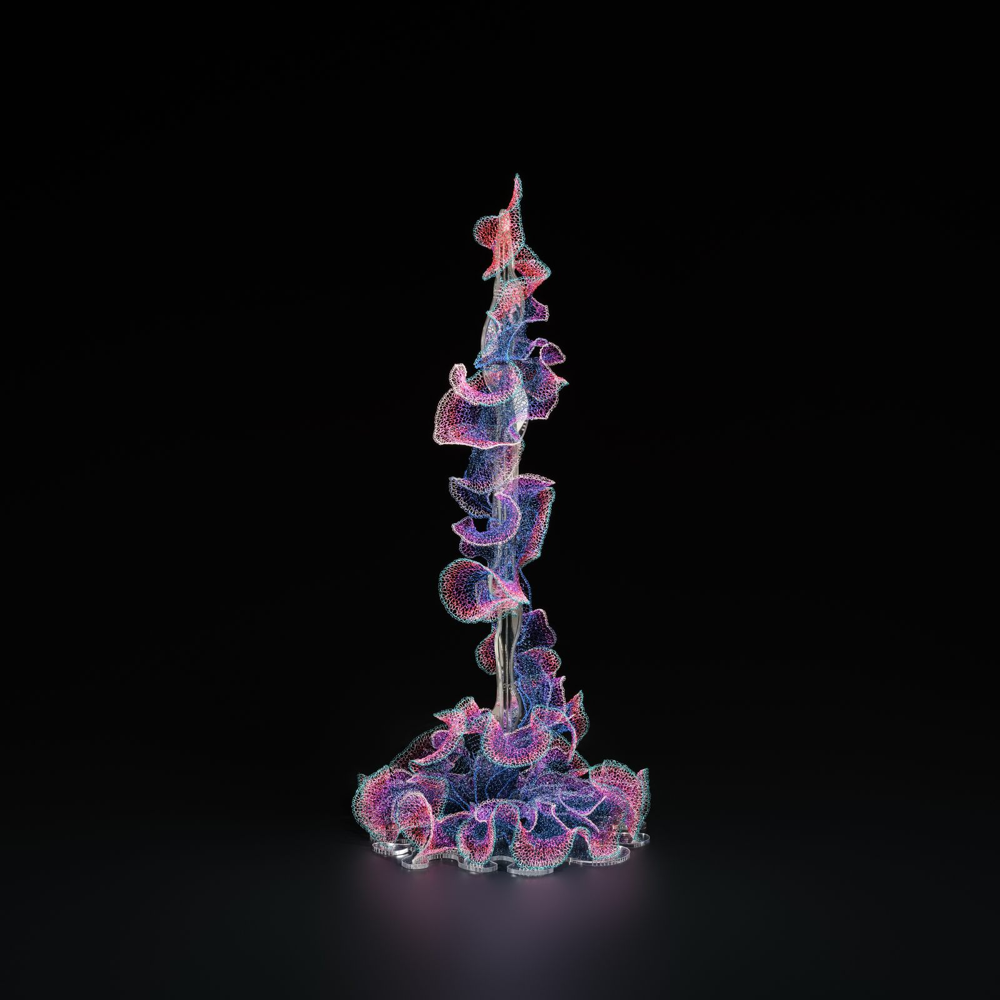
Spun Twist, 2021, Enamelled copper wire, acrylic board, H120x W60x D58 cm
In 2017, Julia Hung was shortlisted for the “New Heads – Fondation BNP Paribas Art Award,” and her work has been acquired by Artvera’s Gallery. Her honors include being awarded the Asian Cultural Council’s New York Fellowship in 2024, being a finalist in the “Taoyuan Fine Arts Exhibition” in 2023, and being the runner-up in the “Pingtung Fine Art Award” in 2020.
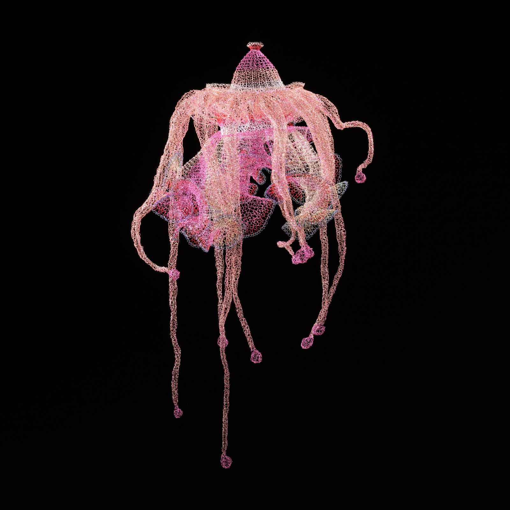
Pink Torus, 2021, Enamelled copper wire, H98 x W60 x L60 cm
Julia Hung’s diverse portfolio includes collections from the King Car Cultural & Educational Foundation and several permanent public artworks, such as recent suspension sculptures in the lobbies of t.Hub Taipei and Hotel Indigo Alishan. She has held solo exhibitions in Taiwan and participated in group exhibitions in Europe and Canada. In recent years, she has been recognized as a rising talent in Asia.
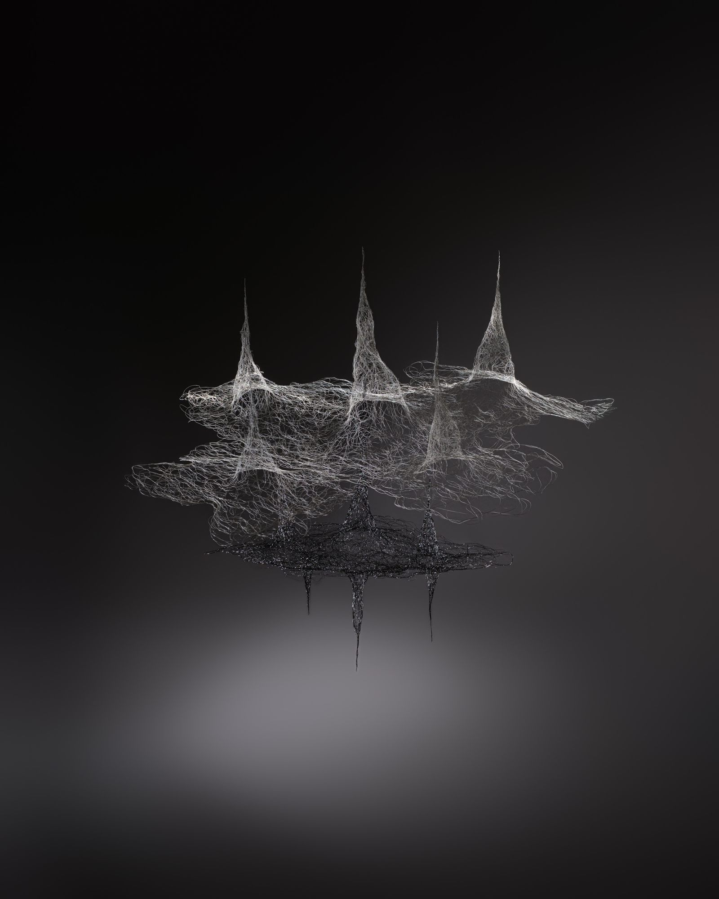
Mystic01, 2024, Enamelled copper wire, Dimensions variable
Her current series, “Mystic 玄 (Xuan),” is on display at River Art Gallery in Taichung, Taiwan. It explores the fluidity between the visible and invisible, and between being and nothingness. In Taoist philosophy, the concepts of “nothingness 無 (wu)” and “being 有 (you)” originate from the same source and are collectively referred to as “mystic 玄 (Xuan).” Although being and nothingness seem opposite, they are actually interchangeable and interdependent, much like how white is hidden within white and revealed in black, and vice versa.
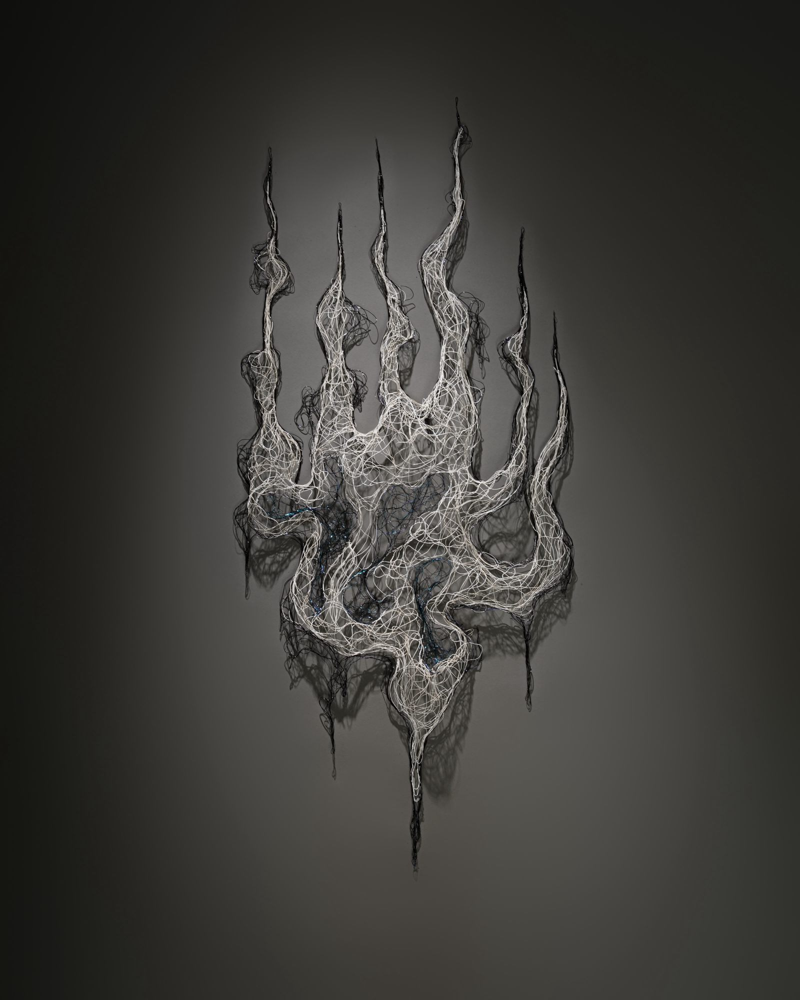
Mystic02, 2024, Enamelled copper wire, H81.5 x W38.5 x D5 cm
Through the use of black and white and the interplay of light and shadow, Julia Hung defines and dissolves the forms of her works within space, flowing between the visible and the invisible. This also embodies the coexisting nature of being and nothingness, highlighting how perception is constantly being shaped and reshaped.
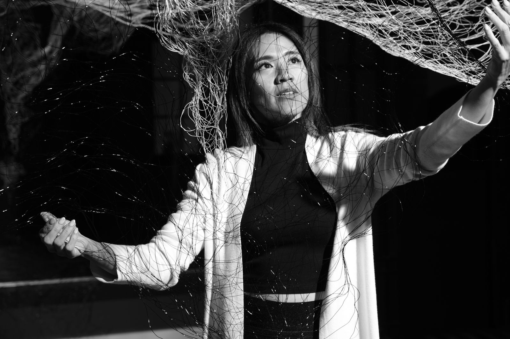
Self portrait
Julia Hung’s art is a testament to the influence of multiculturalism and profound Taoist philosophy. Her work not only transcends cultural and societal norms but also invites viewers to reflect on the interdependence of all things, celebrating the ever-changing and fluid nature of existence.